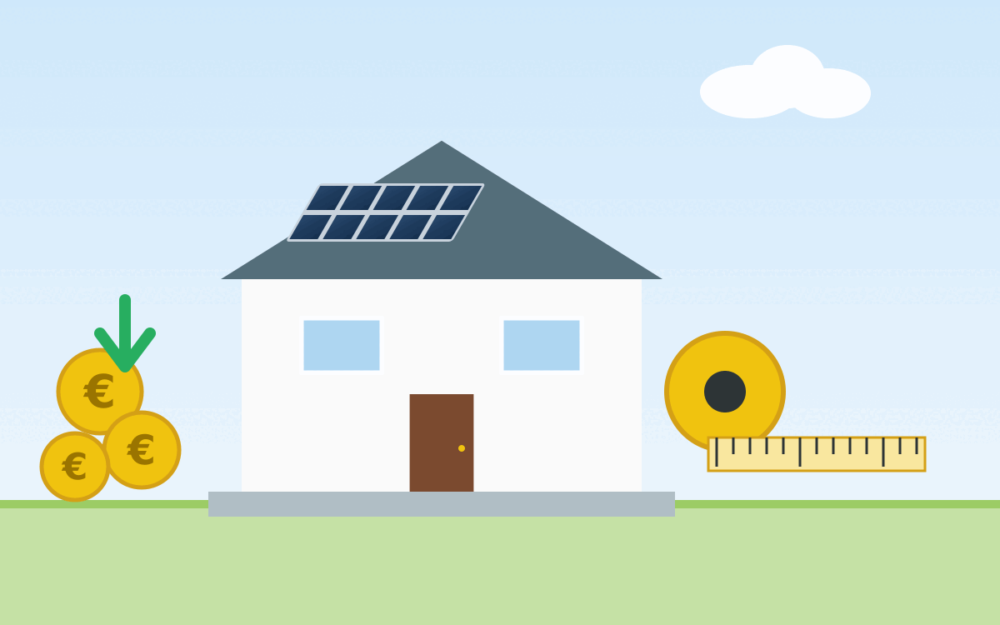

Der Traum vom Eigenheim fühlt sich inzwischen für die meisten Menschen unerreichbar an. Die Immobilienpreise sind in den letzten Jahren stark gestiegen, und viele fragen sich, wie sie sich ihr Traumhaus überhaupt noch leisten können. In diesem Artikel will ich einige Möglichkeiten aufzeigen, wie wir den Immobilienkauf günstiger machen könnten.
{kind=link}

Baukosten
Zuerst einmal: Wo wir aktuell stehen. Wenn man halbwegs günstig und modern bauen will, dann meist:
- Ohne Keller, weil eine Bodenplatte deutlich günstiger ist
- Grundstücksfläche: ca. 600 m²
- Wohnfläche: ca. 140 m², also nicht zu groß
- Energiestandard: KfW-55-Niveau
- Standort: Sagen wir Bayern für das Beispiel
Dann muss man mit folgenden Kosten rechnen:
- Grundstück: ca. 105.000 €
- Baukosten: ca. 455.000 € (ca. 3.500 € pro Quadratmeter Wohnfläche)
- Erdarbeiten & Bodenplatte: ca. 10.000 € (bei einem Keller müsste man eher mit 100.000 € rechnen)
- Aushub: 2.050 €, da ca. 50 €/m³ mit 9 x 9 x 0,5 = 40,5 m³
- Bodenplatte mit Dämmung: 7.700 €
- 5.500 € für Beton: 250 €/m³ Beton mit 8,5 m x 8,5 m x 0,3 m = 22 m³
- 2.145 € für Dämmung + Folie: 30 €/m² mit 8,5 m x 8,5 m
- Rohbau: ca. 150.000 € bei massiver Bauweise mit Ziegeln
- 50% Mauerwerk (Außen+Innenwände): Ziegel für Außenwände, Innenwände aus Kalksandstein/Poroton, inkl. Arbeitslohn
- 20% Decken: EG → OG, OG → Dach; Stahlbetondecken, Arbeitslohn, Schalung, Bewehrung
- 30% Dachstuhl und Dachdeckung: Holzdachstuhl, Sparren, Latten, Pfetten, Eindeckung (Ziegel/Beton), ggf. Abdichtung / Unterspannbahn
- Hausanschlüsse: ca. 15.000 €
- 35% Wasser: Anschluss an Trinkwassernetz, Hausanschlussleitung, Zähler
- 30% Abwasser: Anschluss an Kanal, Rohrleitung, ggf. Schacht oder Revisionsöffnung
- 25% Strom: Anschluss an Netz, Zählerkasten, Kabel verlegen
- 10% Telekommunikation / Internet: Leerrohre, Hausanschlusskasten, Vorbereitung für Glasfaser
- Fassade & Fenster: ca. 40.000 €
- 30% Außenputz: Putzsystem (mineralisch oder Silikat), Arbeitslohn, ggf. Gerüst
- 30% Dämmung: Wärmedämmverbundsystem (Dämmplatten, Kleber, Armierung, Armierungsschicht)
- 30% Fenster
- 5 % Rollläden
- 5 % Haustür (ca. 2.000 €)
- Innenausbau: ca. 75.000 €
- Trockenbau und Innenputz
- Estrich
- Malerarbeiten
- Bodenbeläge (z.B. Fliesen)
- Innentüren
- Haustechnik: ca. 105.000 €
- Heizung (z.B. Wärmepumpe)
- Sanitär
- Elektroinstallation
- Lüftung
- Garage: ca. 30.000 € (massiv aus Ziegeln)
- Außenanlagen: ca. 30.000 €
- Zufahrt
- Garten
- Terrasse
- Zaun
- Erdarbeiten & Bodenplatte: ca. 10.000 € (bei einem Keller müsste man eher mit 100.000 € rechnen)
- Baunebenkosten: 47.000 € (10-15 % der Baukosten)
- Planung & Betreuung: Architekt, Statiker, Energieberater, Bauleiter
- Gutachten & Prüfungen: Bodengutachten, Prüfstatiker, Vermessung
- Behördliche Gebühren: Baugenehmigung, Hausanschlussbeiträge (Abwasser/Wasser), Prüfgebühren
- Finanzierungskosten: Notar, Grundbuch, Bankgebühren (manchmal extra gerechnet)
- Versicherungen: Bauherrenhaftpflicht, Bauleistungsversicherung
- Baustelleneinrichtung: Baustrom, Bauwasser
Rechenbeispiel als Zwischensumme
Damit klar ist, wie die Zahlen zusammenlaufen, hier einmal dieselben Annahmen als kompakte Rechnung:
- Grundstück gesamt: 105.000 € + 9,07 % (Steuer + Notar/Grundbuch + Makler)
- 27.500 € (Vermessung, Bodengutachten, Erschließung) ≈ 142.000 €
- Baukosten: 455.000 €
- Baunebenkosten: 47.000 €
- Zwischensumme: ca. 644.000 €
- + Sicherheitsaufschlag 10 % für Preissteigerungen/Nachträge: ca. 64.000 €
- Orientierungswert gesamt: ca. 708.000 €
Hinweis: Das ist eine grobe Beispielrechnung. Je nach Region, Bauweise, Eigenleistung und Finanzierungsstruktur können einzelne Positionen deutlich abweichen.
Für Baukostenkennwerte (z.B. €/m²) nutze ich hier bewusst eine konservative Daumenregel. Diese sollte man immer mit mehreren regionalen Angeboten (schlüsselfertig, Ausbauhaus, Architektenhaus) gegenprüfen.
Politische Maßnahmen
- Bauvorschriften harmonisieren
- Ziel: weniger Planungsvarianten je Bundesland, mehr Standardisierung.
- Effekt: geringere Planungs- und Genehmigungskosten, mehr serielle Bauweisen.
- Baustoff-Wiederverwendung fördern
- Ziel: wiederverwendbare Komponenten leichter zulassen.
- Ansatz: Standards für rückbaubare Bauteile (z.B. modulare Wand- und Fassadenelemente, Klick-Systeme im Innenausbau).
- Effekt: langfristig geringere Materialkosten und weniger Bauabfall.
Baunebenkosten senken
- Notarkosten
- Vorschlag: rechtssichere Standardverträge mit pauschaler Gebühr statt rein prozentualer Abrechnung.
- Erwarteter Effekt: geringere Kaufnebenkosten bei Standardfällen.
- Maklerkosten
- Vorschlag: konsequentes Bestellerprinzip.
- Erwarteter Effekt: Entlastung von Käufern, wenn Verkäufer die Beauftragung auslösen.
Bauherren-Entscheidungen
- Eigenleistung einbringen
Was spart typischerweise am meisten?
- Hoher Hebel: Grundstückspreis, Verzicht auf Keller, einfacher Baukörper (rechteckiger Grundriss, wenig Vor-/Rücksprünge, keine Gauben).
- Mittlerer Hebel: Material- und Ausstattungsniveau im Innenausbau, Umfang der Außenanlagen, Grad der Eigenleistung.
- Kleiner Hebel: Einzelne Produktentscheidungen (z.B. einzelne Design-Elemente), wenn die großen Kostentreiber unverändert bleiben.
Die Faustregel lautet: Erst die großen Hebel entscheiden, dann Details optimieren.
Extras/Schnickschnack reduzieren
- Bodenplatte statt Keller
- Glatte Wände: Keine Tapete.
- Satteldach ohne Gauben sowie möglichst wenige Dachfenster: Mehr PV kann aufs Dach
- Keine Balkone
- Keine aufwendigen Fensterformen
Günstigere Ausführungen
- Aluverbundplatten im Badezimmer statt aufwendiger Fliesenlösungen
Weitere Maßnahmen
- Heizsystem als Gesamtkonzept planen (Investition + Betrieb + Komfort)
- Luft-Luft-Systeme (Klimageräte) + Brauchwasser-Wärmepumpe können im Einzelfall günstiger in der Installation sein als klassische wassergeführte Systeme.
- Diese Lösung ist nicht pauschal besser: Effizienz im Winter, Schallentwicklung, Luftverteilung und Komfort müssen zum Gebäude und zur Region passen.
Für langfristige Haltbarkeit (um Kosten in der Zukunft zu sparen)
- Lüftungsanlage, um Schimmel zu vermeiden
- Dreifachverglasung für bessere Isolierung
- Photovoltaikanlage für eigene Stromproduktion. Keine Solarthermie, da man dafür weitere Leitungen braucht.
- Regenwasserspeicher für sauberes Brauchwasser für Garten und Toilettenspülung
Einzelnachweise
- 1↑ Immobilienscout24: Grundstücke in Bayern, abgerufen am 12.04.2026
- 2↑ GrEStG § 11 Steuersatz, Abrundung, abgerufen am 12.04.2026
- 3↑ GNotKG (Gebührenrahmen für Gerichte und Notare), abgerufen am 12.04.2026
- 4↑ BGB § 656c, BGB § 656d, abgerufen am 12.04.2026